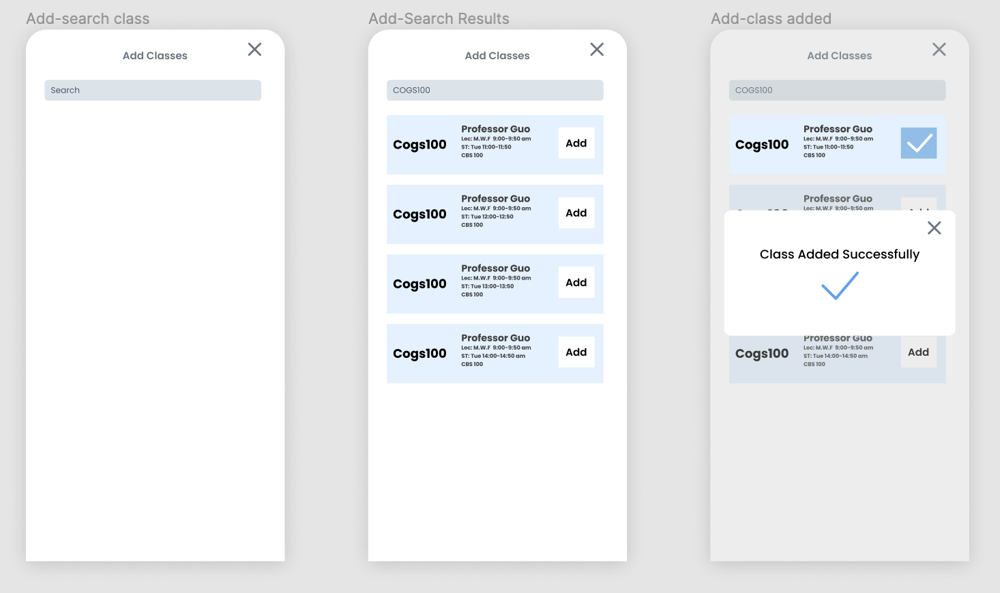

Have you ever felt difficult to find someone to discuss about class content especially when there is no group assigned and the class is huge?
Want to study together with classmates but too shy to start a conversation?
Have logistic questions about the class but feel not necessary to post on official class forum?
We feel the same...
and here we designed ClassHouse!
ClassHouse is a platform tool combines multiple features to helps college students to connect and study. The features build into ClassHouse include Group chat, Friend system, and Planning.
We've been hearing students complain about having problem talk to classmates extracurricularly over and over. Every start of the semester is full of anxiety due to unable to find classmates especially in the online lecturing circumstance. Although communication platforms like piazza or campuswire are often utilized by class faculties as official communication tool for the class, students also need another place to talk more casually instead of posting questions on the forum. There are many choices for such a place, for example discord, messenger, snapchat, wechat. However, it's quite difficult to find the chat group since students have to be invited or create one and invite others they know from the class. Me and my friends have been struggling for three years and now we want to make some changes.
There are three blocks on the home page: Class Schedule, Course Portal, Notification. The first thing students need to do is cliking the button highlighted in the figure to add courses for the semester. In our design, all courses provided by the university will be preloaded in the database and students and simple join those chanels.
We design the sidebar menu to be "discord-style". It may take some time for users who never used discord before to get used to it but it can simplify the operation for switching between classes and chanels.
A typical chat chanel has a filter that users can switch between All, Picture, File, and Link. This will help users to browse content faster coordinate with the search function.
We also have Unread Message and New Message notification that user can click to fast navigate to the specific message.
The messages of ClassHouse is a combination of post and casual message. On one hand, users can do free talking, on the other hand, other users can reply to one message right under it just like forums and do other operations like using emoji to response, save posts, pin, copy, and share. This design make conversation easier than in forum by skipping writing title, choosing subject, etc. It's also more condense than normal chat rooms where replies spread everywhere and get interrupted by others.
The messages send by users themselves will have blue background to help users identify. Saved message will have orange background.
Study Group is another module under class. Here people can schedule or join study groups, which will be on the public calendar of class. Easy to schedule, easy to join!
Why necessary? Usually students only do group study with friends they already know or simply join the review session hold by TAs or Professors before exam. The way they notify students are by email or posts on the forums. The Study Group function of ClassHouse just make things easier and provides more opportunity for students to make friends with others they don't know yet.
Under the Classmate module in each class, user will be able to find a full list of members in the same class and they can send direct message and friend request.
Users can see all their friends on the Friends page, which is the second button on the navbar. We design a special function that users can view their friends' schedule. Once our users want to meet up with their friends, they can check their class schedule to decide when/where to meet.
Users will also be able to add friends directly by searching their names, major, etc.
The Message page will display all chats users have with their friends. Users can pin the chat to the top or delete the chat.
We design the chat format with friends in a more simple and casual way, just bubbles like iMessage or Messenger.
Users will also be able to add friends directly by searching their names, major, etc.
The most common apps that college students use to communicate with others can be devided into 2 categories: Forums like piazza and campuswire, chatrooms like discord, messenger, etc. Forums are usually authorized as official communication platform by professors and chatrooms are established by students and spread in small scales. Group chatroom in apps like messenger won't be very large, usually just several close friends or group members from the same class. Chanels in discord are more public and some famous one can contain many students from the same major.
To better understand the pain points of the group and setup the priority of the functions for the first stage of development, we conducted a survey including following questions:
According to the responses we received from more than 30 survey participants, most people talk/work with exsisting friends in the same class. There are also a amount of students make friends during zoom breakout rooms or from assigned teams and from class websites like piazza/campuswire/slack.
There are two significant answers to the question "How do you feel about the app you are using currently":
Since we used a scale of 1-10, people tend to be neutrual on this type of questions. The mean of ratings could be very close to each other and even small difference means a lot to us.
Forum, Group chat are the most wanted features, while "friends recommandation" are not that important for students.
The first version of the class schedule can switch between daily and weekly view. All window needs to be expanded by clicking the arrow button at the bottom to view the complete schedule.
Issue: The font is too small, otherwise difficult to fit in such small area.
From V1 to V2, we dispute the idea of switching between daily and weekly view. Instead, we use color blocks to roughly tell user how many events do they have for each day. The detailed info are listed beblow. No more extra operation needed to view full schedule. We also adjust the color of the module to better fit the theme of our app.
Since we are not making a calendar app, we only provide weekday schedule to remind users of their class.
We keep improving the design as development and user testing going on...
Web version will also be considered in the future.
It's the first time for me to work with more than 2 UIUX designers and developers team to create a real app from scratch. In this process, I've encountered many problems that will never appear when simply doing class projects. Since I work with other 3 excellent designers, it's quite usual for us to argue about different design plan. We create 4 version of class schedule, 3 versions of the sidebar, countless changes on every small components. I feel it very enjoyable to listen and sharing ideas and I learned a lot from my peers.
Working with developers is another challenge since they usually can't perfectly replicate the prototype design. I used to design and code by myself so there are no problems for me to make product the same as design. However, ClassHouse is a big app with complicated functions. Our developers are still students and they pretty much rely on the exsisting kits to simplify their coding. As designers, we need to point out issues frequently and make adjustments to the design to compromise with tech issues. I also learned to write detailed interaction guideline for developers to understand our design. It's a very good experience to work with Android developers to get familiar with Android design so I'll be ready for future work.
There are still many issues to cover in the future. For example, how to get API from each school or how do we preload all courses in the system before each semester begins. Our team will keep working on ClassHouse and once it's ready, we hope there are some buyers can keep improving this app and facilitate all students.


Designed & Made with passion & love by Jack Chen